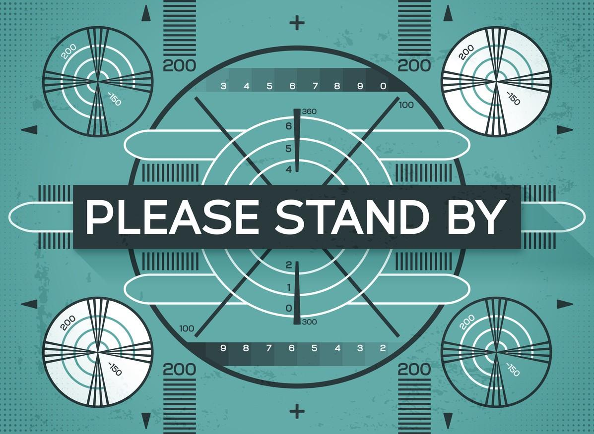

A Broadcast Consciousness
19 Nov 2018 · 17 min read
topics: cultural evolutionintegraltechnology

Let me take you on a little journey of thought exploring some hitherto unconsidered aspects of our common cultural evolution.
Developmental Levels as an Evolution in Consciousness
I've written before about cultural evolution that occurs through the achievement of successive developmental levels.
These developmental stages can be viewed through an objective lens, or through a subjective, or an intersubjective lens. That is, we can look at each stage from an exterior perspective, or from a singular interior perspective, or from a collective interior perspective. (For more on these various perspectives, see The Four Quadrants of Human Knowledge.)
From a subjective, or inter-subjective perspective, it is tempting to view these stages of development as having some ethical direction. For example, Ken Wilber has said that:
…moral development tends to move from ‘me’ (egocentric) to ‘us’ (ethnocentric) to ‘all of us’ (worldcentric) – a good example of the unfolding waves of consciousness.
In a similar vein, and in a better known quotation, Martin Luther King once said:
The arc of history is long, but it bends towards justice.
Developmental Levels as Evolving Communications Strategies
However, it is also possible to look at these same stages of development from a more objective, exterior viewpoint, as a series of Evolving Social Structures. When taking this perspective, it may be useful to remember this comment from Yuval Noah Harari:
To the best of our knowledge, only Sapiens can cooperate in very flexible ways with countless numbers of strangers. This concrete capability – rather than an eternal soul or some unique kind of consciousness – explains our mastery of planet Earth.
And so, from this perspective, we can look at these developmental levels as a series of communication strategies enabling ever greater levels of human cooperation:
- Family bonds, including verbal sharing of knowledge and resources with kith and kin, as well as passing these along from one generation to the next through oral traditions;
- Hierarchies allowing large organizations to be built to handle complex missions;
- Written wisdom that can be shared uniformly across large groups, and passed down to new generations without unintended variation;
- Peer networks that allow informed, interested and qualified participants to share and preserve the best existing knowledge, and to test potential new discoveries;
- Pluralistic societies that allow strangers from many different backgrounds to peacefully coexist in an egalitarian framework that allows and encourages the emergence of new and unplanned communications channels.
From this perspective, it's good to note that these various communications strategies can all productively complement each other. Even though later ones have developed gradually over time, we shouldn't think of later ones as being superior to earlier ones, or as rendering earlier ones obsolete: rather, each new one simply represents one more tool in the toolbox.
From this exterior perspective, it's also important to realize that technology has played an essential role in these various stages of development. As human communication has evolved from grunts, to spoken language, to mathematical expressions, to the written word, to the printing press, the telegraph, the telephone, the fax machine and the Internet, these technical advances have proven to be essential enablers for various stages of development. As just one example, it's hard to see how humans could have formed working productive peer networks, enabling many scientific advances, without the use of the printing press to publish books and journals.
Continuing Stages of Development
With hindsight, of course, it's relatively easy to see how these various interrelated factors have played their respective roles in our human cultural evolution. But how will our culture continue to evolve in the future? How is it evolving now? Answering those questions is a bit trickier.
Again, from an interior perspective, it's tempting to think of our future cultural evolution as a moral or spiritual journey to increasingly higher ground. Wilber might characterize this as a journey from “worldcentric” to “kosmocentric”; Clare Graves, the originator of the developmental levels as defined in Spiral Dynamics, characterized this as a transition from “subsistence levels” to “being levels.” Some might describe this as a transition from “first-tier” to “second-tier.”
The problem with this sort of thinking, it seems to me, is that these projections seem to be based on wishful thinking concerning the nature of human interior development, but are unsupported by any evident corresponding changes in human social structures. And while we might argue about whether interior development precedes exterior, or vice-versa (probably with as much success as our usual chicken-or-the-egg debates), it seems clear that we can't have one entirely without the other. If there is going to be development to a new level or stage, then there will be interior aspects to that development, but there will also be exterior aspects. And if we can't describe any new enabling technologies and social structures, then it would seem pointless to talk about ever more refined levels of human consciousness.
Having finally reached this point in our thinking, it might be only natural to look about us to see if there are any communications strategies or social structures we might have overlooked, or failed to sufficiently appreciate.
Broadcasting as a Communications Strategy
And here, I'm afraid, we don't have to look very far. For there is one major communications strategy that has assumed preeminent importance over the last century that we haven't yet mentioned: broadcasting.
For a description of what I mean here, the introduction from Wikipedia will serve us well:
Broadcasting is the distribution of audio or video content to a dispersed audience via any electronic mass communications medium … in a one-to-many model. Broadcasting began with AM radio, which came into popular use around 1920 with the spread of vacuum tube radio transmitters and receivers. Before this, all forms of electronic communication … were one-to-one, with the message intended for a single recipient.
This communications strategy has been so omnipresent for all of us alive today that we no doubt take it for granted. And while we tend to think of broadcasting in terms of radio and television programming, it is clear that these sorts of one-to-many communications are now showing up in telephone calls, in text messages, in emails, in app notifications on our personal devices, as well as in purportedly “social” media such as Facebook and Twitter.
Now this sort of broadcasting clearly has its uses, as the occasional tests to our Emergency Broadcast System remind us. But it is also ripe for misuse.
Lessons from the Last Century
Hollywood director Frank Capra clearly highlighted some of these issues in his 1941 film Meet John Doe. A newspaper reporter fabricates a piece of “fake news” about an unemployed “John Doe” threatening suicide on Christmas Eve in protest of society's ills. The story “goes viral,” and the newspaper interviews a series of homeless people looking for someone who can pretend to be the nameless protester described in the original article. The person they pick has an older companion who rants about “heelots”: a lot of heels who are constantly trying to get money from others. The reporter pens a series of pieces supposedly written by John Doe, complaining about society's ills, which are read aloud by the John Doe character and broadcast over the radio. Their simple theme: “be a better neighbor.” At this point, both the John Doe character and the reporter begin to sincerely take the perspective of the fictional character, and begin to see the good that is coming from their radio broadcasts, with John Doe clubs forming all over the country to help their neighbors in need.
At this point a major industrialist with money and political ambitions decides to co-opt this movement for his own purposes. He helps to organize a national convention, bringing together representatives from the now nationwide John Doe clubs. The John Doe character is scheduled to deliver a speech, written by the reporter. But at the last minute the industrialist coerces the reporter into producing a speech that will announce the formation of a new political party, with the industrialist being endorsed as the party's presidential candidate. The John Doe character rebels and refuses to politicize the movement. He tries to speak to the assembled crowd to tell them how he really feels, but the industrialist gets to the microphone first and denounces the John Doe character as a fraud; Doe tries to speak to the crowd, but the industrialist cuts the wires, effectively silencing Doe.
Capra famously had troubles figuring out how to provide an upbeat conclusion to this dark tale, filming four different endings and testing them on various audiences in different theaters around Southern California. In the end, though, he was unable to come up with any sort of fully triumphant resolution, which may be one reason why this movie is not as well known today as some of his others, such as Mr. Smith Goes to Washington.
What's striking to me is the degree to which this story from eight decades ago sounds like something from today's headlines. Update the technology a bit, and it's all too familiar.
Of course it was only a couple of years before the making of Meet John Doe that Hitler had addressed 15,000 party faithful in Berlin, demanding that Czechoslovakia cede the Sudetenland or face invasion, while having his words broadcast live to millions around the globe, including simultaneous translations into many foreign languages. And it was only a few weeks after Hitler's speech that CBS broadcast Orson Welles' famous radio adaptation of War of the Worlds, unintentionally causing widespread panic among US citizenry.
This whole concept of one source being able to simultaneously broadcast to millions of people was still a relatively new phenomenon back then, and so perhaps it was easier for Capra to take a serious look at it back in the 1940's than it is for us today, when we just accept it as part of the fabric of our existence.
Benefits and Dangers of Broadcasting
So what can we say about this communications strategy of broadcasting, including its use and misuse in our society today? Here are some thoughts.
- Broadcasting is a one-way, one-to-many communications strategy that transmits a message from a single source to a whole host of recipients.
- At its best, broadcasting is an efficient means to transmit important breaking news to large masses of people across great distances. And in a world of increasing global interdependence, this ability is more important than ever.
- Broadcasting can also be used as a unifying force for large groups of people, especially at a national level. Whether it's watching a favorite television show, or listening to a speech from a leader, such broadcasts can bring people together in large numbers. For Americans of my generation, as an example, it's hard to talk about the early popularity of The Beatles without collective reminiscence of the original Ed Sullivan broadcasts introducing the Fab Four to our North American shores. And of course sports broadcasting has grown tremendously in the past several decades, unifying fans from all over the world as they follow their favorite sports and teams.
- Broadcasting can all too easily be used to distort or misrepresent the truth, as well as being used to transmit it in an unvarnished state. By its very nature, broadcasting is useful for communicating information that people cannot easily verify or contradict through first-hand knowledge.
- The ability to unify people seems to work equally well whether they are being unified around an inspiring truth, or a destructive falsehood. As with the Orson Welles broadcast – as well as with the rise of Hitler – when everyone around you is hearing the same message at the same time from an authority in power, then you've created a powerful echo chamber that amplifies the message being transmitted.
- Since broadcasting requires lots of carefully coordinated expensive technological infrastructure, it is inevitably a tool for those with money and power. And so the mission of those wielding this power becomes vitally important. As one example, the Public Broadcasting Service (PBS) in the US is a nonprofit with the mission to “serve the American public with programming and services of the highest quality, using media to educate, inspire, entertain and express a diversity of perspectives.” On the other hand, a Google search for the mission of Fox News did not turn up any results.
- When broadcasting is employed by those with money and power, and is used by a for-profit enterprise, and the only goal is to make more money and acquire more power – well, then, we might occasionally be skeptical about the veracity and motivation of their transmissions. (And, of course, this isn't limited to Fox News, and it's not meant to give PBS or other nonprofits a free pass.)
- Advertising and broadcasting fit together as naturally as a hand and a glove. When a business is trying to introduce a new product or service, or change public perception of an existing one, broadcasting is the fastest way to communicate the desired message straight from your marketing department to millions of consumers.
- And while we could easily devote an entire separate column to an analysis of advertising, let us simply say for now that advertising's overall benefit to society seems entirely questionable. In many ways, advertising represents a consumer's deal with the devil: “Offer me a bunch of diverting programming for free, and in return I'll allow you to interrupt the flow of programming periodically to show me advertisements that I would otherwise not choose to see. And oh, by the way, you can show me the same ad repeatedly, and it does not need to contain the slightest shred of truth. And if you want to try to subliminally influence my buying decisions then, hey, go for it.” A Faustian bargain if ever there was one.
- Broadcasting is especially fraught with danger when funded by advertising and/or by bundled content providers (such as cable television), since then the quantity of content is valued over its quality, and the mission is reduced to simply keeping the bundle sold, or acting as a carrier for whatever advertising pays the most.
- As a tool for getting real work done (remembering Harari's quote above), broadcasting is best used infrequently. In my time working for a successful major American corporation, over the course of decades, broadcasting was used very little. Even when there was some important new strategic direction to be communicated throughout the organization, leaders recognized that flowing the message downward through the hierarchy, with each leader successively talking to his or her direct reports, was much more effective because it allowed appropriate adaptation of the message for each group, and carried more credibility than an impersonal message broadcast from on high. As another example, see the video of the 1997 WWDC Fireside Chat with Steve Jobs. Even though this was a critical moment in Apple's history, and even though he needed to drastically change the company's direction, he talked to developers face-to-face, entertained questions from the audience, and responded to tough questions with authenticity and aplomb.
- That being said, it's probably obvious that broadcasting as a communications strategy is tremendously overused in today's society, especially in advertising and politics. I receive 50 to 60 emails everyday from various Democrats and progressives, none of which come from anyone I've personally met, and almost all of which are purporting to deliver some breaking news about how the Republicans will end the world tomorrow if I don't give the senders my time and money immediately. All of these messages go straight into a “Politics” folder and I delete them en masse once a day without looking at them. Sorry, guys and gals. I'm sympathetic, but I don't need this volume of one-to-many communications on a daily basis demanding my money and attention. As another example, see this series of covers from the NRA's magazine American Rifleman. From 1923 through the seventies these covers showed readers outdoorsy pictures of their fellow enthusiasts along with nature and wildlife. Starting in the Reagan years, though, the covers all turned heavily political, constantly seeking to divide and polarize. Helpful? Probably not.
- Even when used to deliver actual breaking news, broadcasting may be overused to the detriment of society as a whole. Analysts such as Steven Pinker, in his book The Better Angels of our Nature, have pointed out that modern citizens seem to form the belief that society today is more violent that it was in the past – even though actual statistics show the opposite – simply because our daily news media pick up and widely broadcast and focus on such tragedies so intensively. And the increase of mass shootings in America can partially be traced to a “media contagion effect,” with most shooters wishing to emulate a previous mass shooter, and with the promise of achieving national media attention proving to be powerful motivation for these dangerous individuals.
- And with all this being said, it might be safe to theorize that broadcasting is most effective when you are trying to reach an audience that is not otherwise well connected via one of the other communications strategies listed above: say, people who are retired, or otherwise unemployed, or living in remote rural areas. This might explain, for example, why Hitler was able to rise to power in the 1930's, when over 30% of the German workforce was unemployed.
A Broadcasting Consciousness?
So, coming full circle in our inner-to-outer journey, it might be reasonable to ask whether there is a corresponding subjective state that matches up with the broadcasting communications strategy. In other words, is there a broadcasting “consciousness”?
Unfortunately, even though it's hard to peg this as an advance on any kind of upward moral trajectory that I can identify, I'm afraid there is.
I would describe it like this:
- Reactive rather than reflective;
- Addictive, tending towards increasing levels of consumption;
- A feeling of unification and bonding around a shared set of images and catchphrases;
- A feeling of superiority over, and opposition towards, some other group(s) regularly vilified in the broadcasts;
- An inability to seriously consider other points of view;
- A paucity of original thought – that is, a lack of thoughts and ideas originating from within.
What We Can All Do
What can we do to fight the spread of “broadcast consciousness”?
First of all, become aware of broadcasting as a communications strategy, and become aware of a “broadcasting consciousness,” in yourself and those around you.
Share this awareness with others.
If you currently find yourself spending too much time tuning in to various broadcasts – whether from your favorite television news channel, or from non-social alerts and notifications on your personal device(s) – turn them off, and look for other more effective communications strategies that you can enable in your life.
Regularly consider news sources that do original reporting, and that offer differing perspectives. Avoid news sources that simply parrot items of dubious parentage, and collections of news sources that all seem to simply repeat a common message without any new analysis or investigation. In this regard, you might want to be aware of research reported here.
In particular, look for ways to become more reflective and less reactive. You might start by selecting and then reading a new book on some topic of interest, being careful to pick something that won't simply tell you things you already think you know. In management circles, this is often described as paying more attention to what's important, and less attention to what's ostensibly urgent.